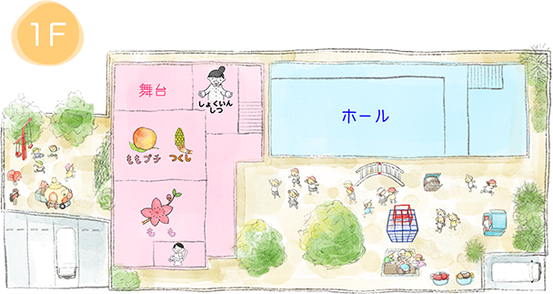
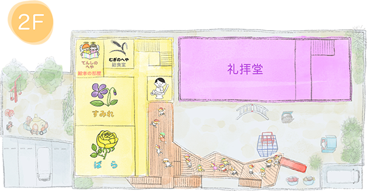
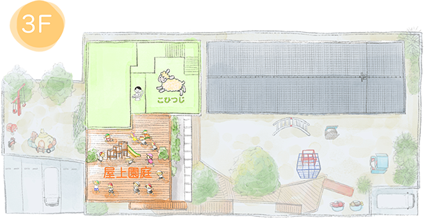
現在の園舎は建て替えを行い、2018年度から始動した園舎と園庭です。 園舎内の階段は1、2歳児がハイハイで上がれる高さに設計されていたり、絵本の部屋は本の置き方をもあらかじめ考慮した設計になっていたりと、子ども達の事を考えて様々な工夫が凝らされています。
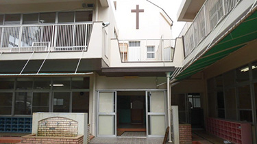
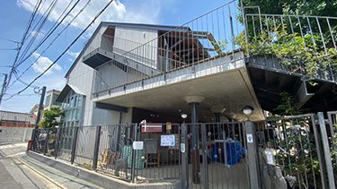
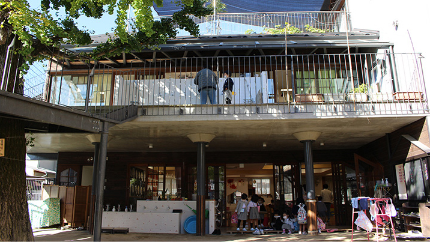
「おーい！やっほー！」1階と２階とで子ども達のやり取りが聞こえてきます。
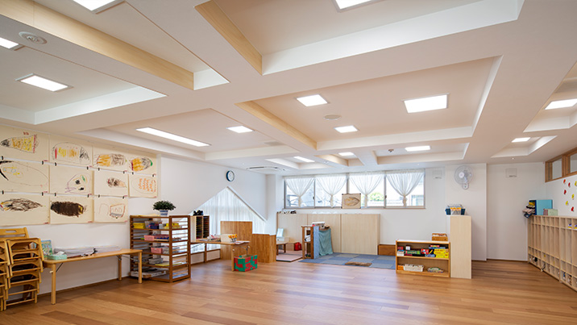
保育室には遊具がいっぱい！好きな遊び見つけてね。
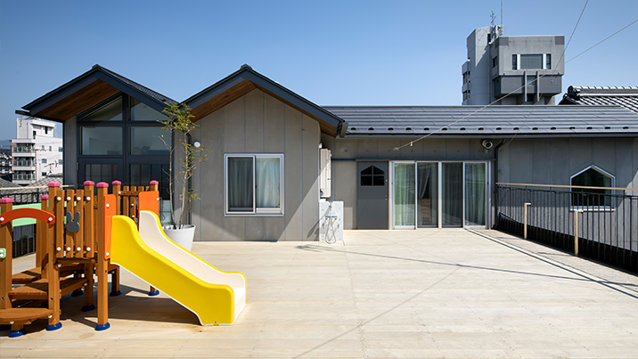
屋上園庭は、こひつじ組さんがゆったり遊びます。電車も見えて眺めも最高！
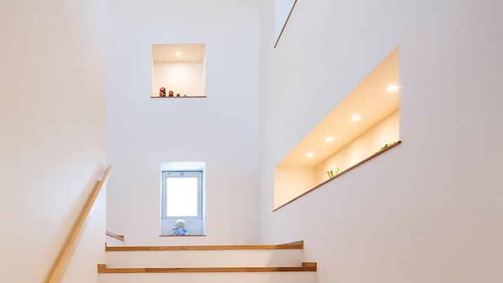
明るい階段には、素敵な飾りがお出迎え。季節も感じられます。
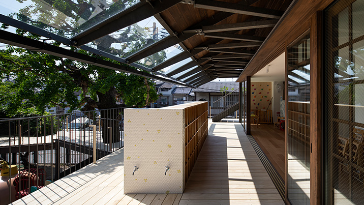
「おはよう！」「せんせ～いきたよ！」朝から元気な声が飛び交う２階玄関。
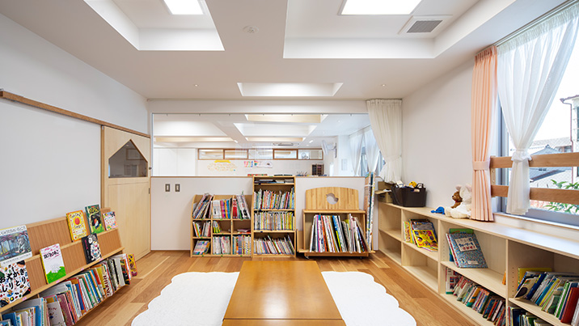
ご自慢の絵本のお部屋。絵本も紙芝居もこんなにたくさん。図書館みたいだね！
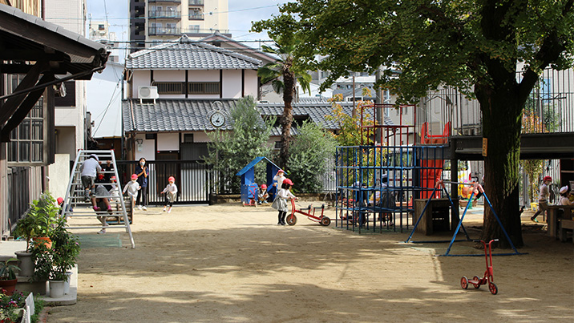
思い思いに体を動かして遊びます。今日はどんな遊びが繰り広げられるかな？
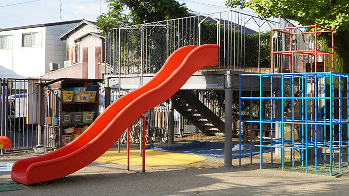
大きなすべり台もあるよ。スピードに乗ってヒュ～ンと気持ちいい！
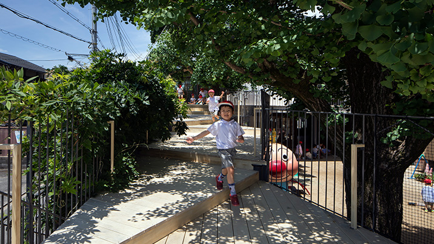
イチョウの木がこんなに近く感じられる！大きな木陰に守られて心地よいね。
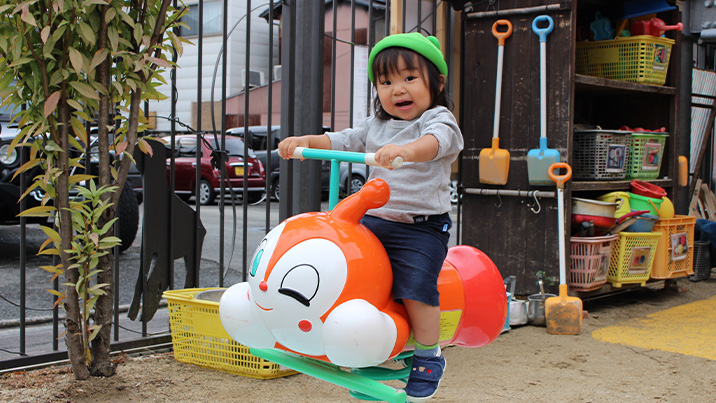
ドキンちゃんのスプリング遊具。ゆらゆら楽しい！アンパンマンもいるよ！
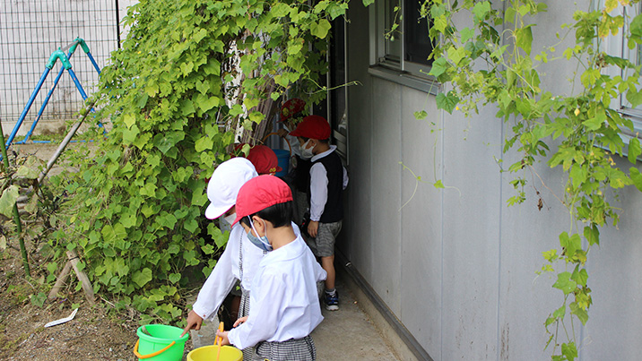
グリーンのカーテンが夏の日差しからみんなを守ります。涼しいんだよね！
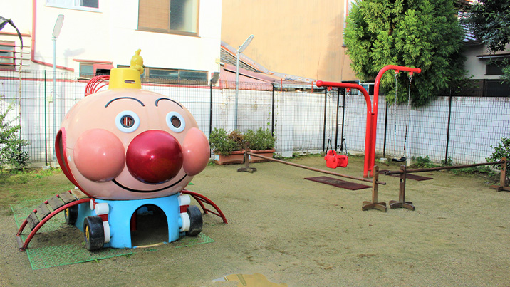
アンパンマン号は、みんなの人気者。たくさんの子ども達でいっぱい！
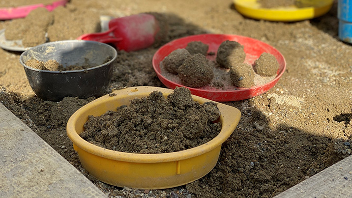
砂場って、いろんなものに変身するから楽しい！今日は、ごちそう作ったよ！
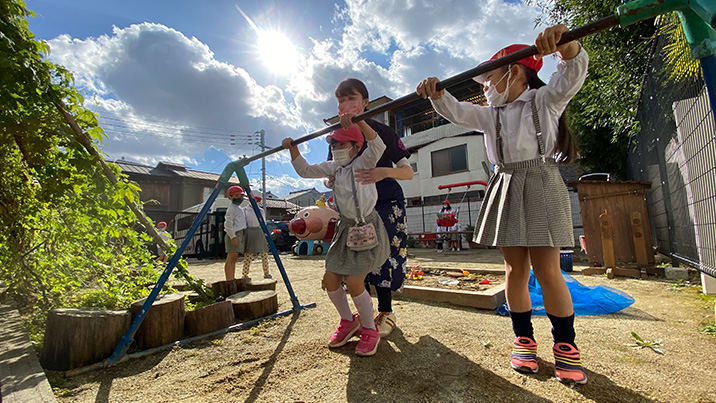
ぶらさがり競争。どっちの腕の力が強いか競争だ！先生も手伝って～！
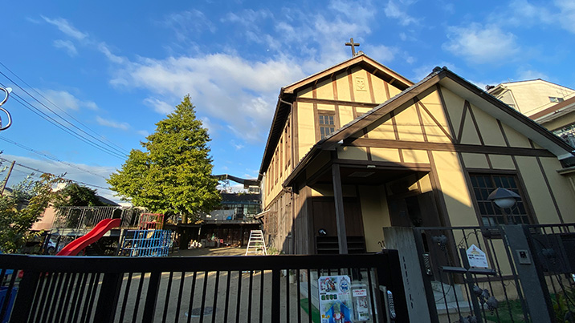
歴史ある京都聖三一教会。いつも子ども達を見守ってくれています。
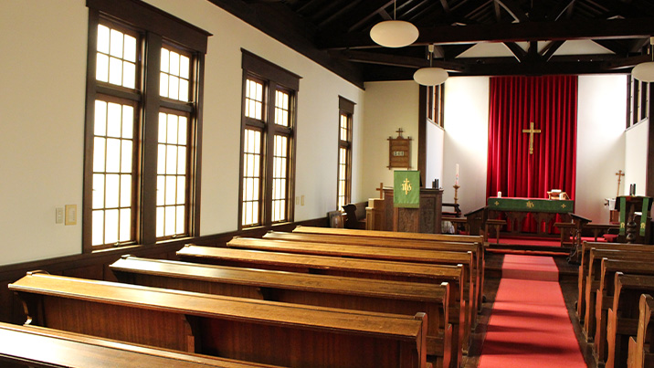
窓から差し込む光がとても温かです。神さまを心で感じられる空間です。
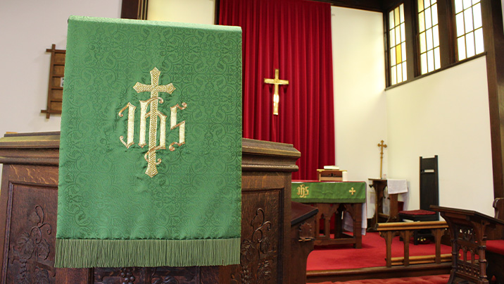
毎週木曜日は礼拝の日。心静かにみんなで手を合わせお祈りの時間を持ちます。